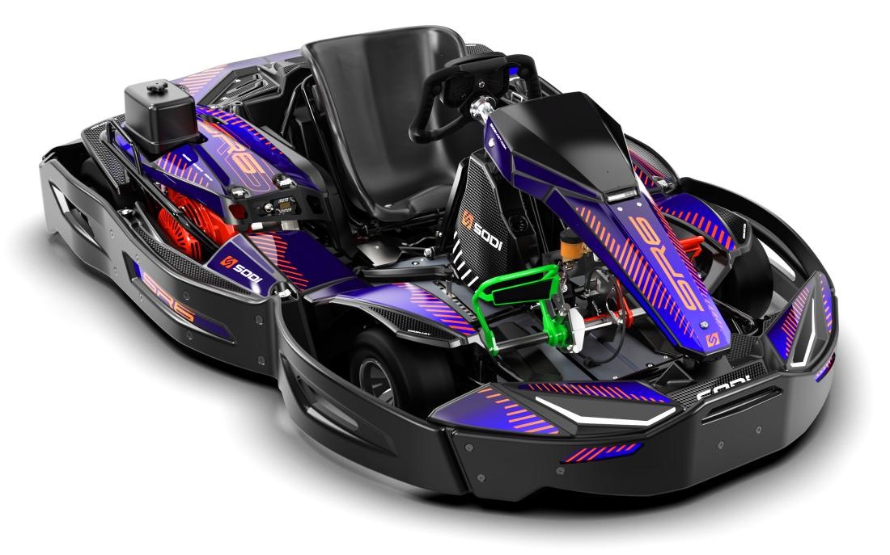

Développement du SODIKART SR6
Validation industrielle et assurance qualité pour le lancement en série

Contexte du projet : Le lancement d'un nouveau modèle tel que le SR6 exige une rigueur absolue avant d'autoriser la production en grande série. Mon rôle a été de sécuriser cette phase d'industrialisation en garantissant que chaque composant réponde strictement aux exigences de fiabilité et de performance attendues dans les sports mécaniques.
Mes Missions Clés
Contrôle des Échantillons Initiaux (EI)
Validation de la conformité des premières pièces (prototypes et préséries) par rapport au cahier des charges technique. J'ai réalisé des inspections métrologiques approfondies en utilisant des outils de précision tels que le pied à coulisse et les bras de mesure tridimensionnels pour m'assurer du respect strict des tolérances avant l'accord de lancement.
Suivi des Indicateurs Rebuts
Mise en place et pilotage d'indicateurs de performance qualité liés aux taux de rebuts. En analysant les données de non-conformité, j'ai pu cartographier les défauts récurrents, quantifier leur impact, et cibler précisément les dérives dans le processus de fabrication pour initier des actions correctives efficaces.
Audit Fournisseur Post-Non-Conformité
À la suite de la détection de non-conformités critiques, j'ai pris en charge la réalisation d'un audit chez notre fournisseur. Inspiré par les méthodologies d'amélioration continue du Lean, cet audit visait non pas seulement à constater les défauts, mais à remonter à la cause racine pour sécuriser définitivement la chaîne d'approvisionnement du SR6.